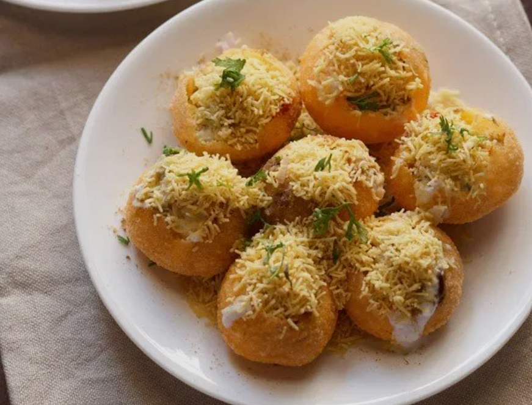

~Indian Cuisine~
Dahi Puri (Mumbai Style)

Prep time: 45 Minutes
Cook: 15 Minutes
Total: 1 Hour
Total Servings: 4 servings
See
Inspiration
Ingredients:
2 to 3 medium size boiled and peeled potatoes
1 small onion, finely chopped (optional)
1 small tomato, finely chopped (optional)
a few sprigs of coriander leaves, finely chopped (cilantro leaves)
½ to ¾ cup Curd (yogurt) or as required
½ cup mint coriander chutney or coriander chutney
½ cup sweet tamarind dates chutney or saunth chutney
¼ to ½ cup red chili garlic chutney
24 to 30 puris or golgappas
nylon sev (fried thin gran as required)
red chili powder as required - optional
chaat masala as required
roasted cumin powder as required
black salt or rock salt as required
Procedure:
- Step 1: Firstly prepare all the chutneys and keep aside.
You can also make the chutneys a day before and refrigerate them.
- Step 2:Boil the potatoes and let them cool.
- Step 3:Once cooled, peel and chop the potatoes.
- Step 4:Chop the onions, tomatoes and coriander leaves finely.
- Step 5:Beat the yogurt (curd) with a wired whisk till smooth.
- Step 6:In a plate, arrange the puris or golgappas. You decide the number
of puris to be served in each plate.
- Step 7:Break the puris from the center to create space for the potatoes
and chutneys. Stuff the chopped potatoes in the pooris.Now add the chopped
onions, tomatoes on top of the potatoes in the puris.
- Step 8:At this stage you could sprinkle some chaat masala, jeera powder,
red chili powder and black salt on the puris. This step is optional.
- Step 9:Top the stuffed puris up with the green chutney, sweet chutney and
red chutney. Top the chutneys as per your liking and taste.
- Step 10:Add the yogurt in each poori.
- Step 11:Now again sprinkle all the four dry masalas i.e chaat masala,
roasted cumin powder, red chili powder and black salt.
- Step 12:Add the sev on top in a way that each poori gets covered with sev.
Finally garnish with chopped coriander leaves.
- Step 13:Serve dahi puri chaat as soon as you make it as the puris become
soggy if you serve even after a few minutes.